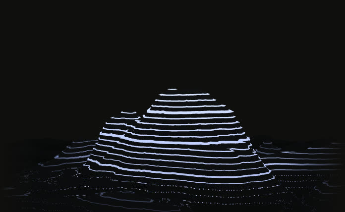
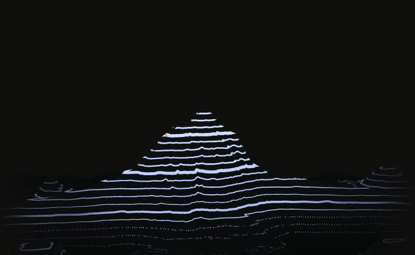
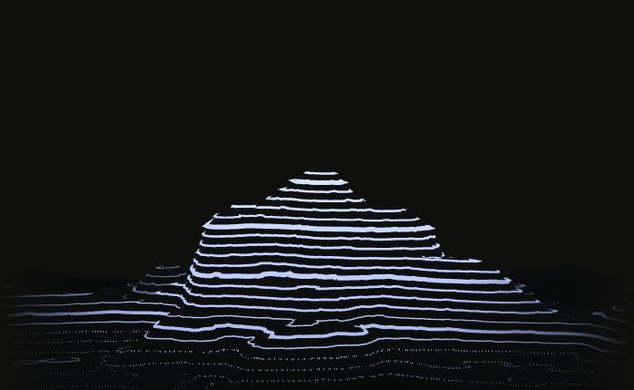
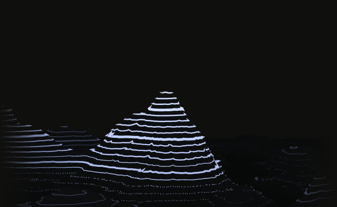

How we helped Groww boost engagement on their app
A deep engagement with Groww to design and improve features that engage users on their consumer app, along with design support for other product initiatives.
View case studyHelping ambitious teams reach the next peak.
We partner with founders and design leaders to turn ambitious ideas into shipped, high-impact work.




A deep engagement with Groww to design and improve features that engage users on their consumer app, along with design support for other product initiatives.
View case studyA design overhaul of Firstpost’s website and the creation of their first mobile app, with a significant pivot for their business and content strategy.
View case studyAn MVP to v1 redesign of Breathe ESG’s SaaS platform, to make it easier for companies to track their ESG metrics and regulatory compliance.
View case studyConceptualising and designing a therapy experience, alongside redesigning their websites and apps to impact revenue.
View case studyWorking with Rahul and team has been an absolute pleasure! The website they’ve designed not only captures the essence of our brand but also resonates with our target audience, resulting in increased engagement and satisfaction.
Collaborating with the Tibba Design Studio team on our critical design sprint was transformative for Breathe ESG.